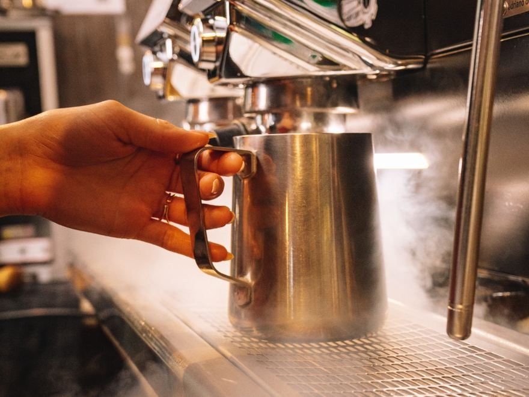
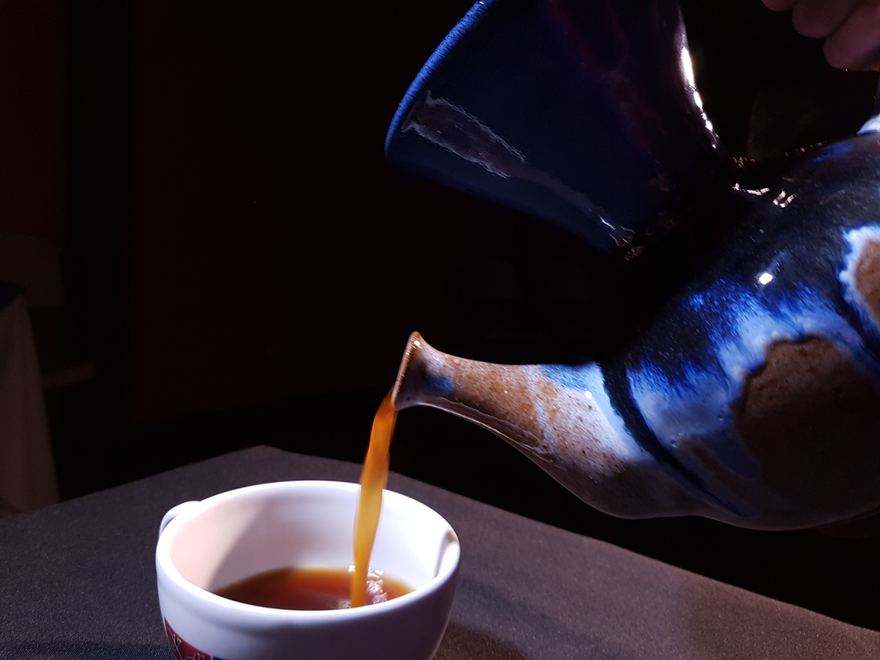
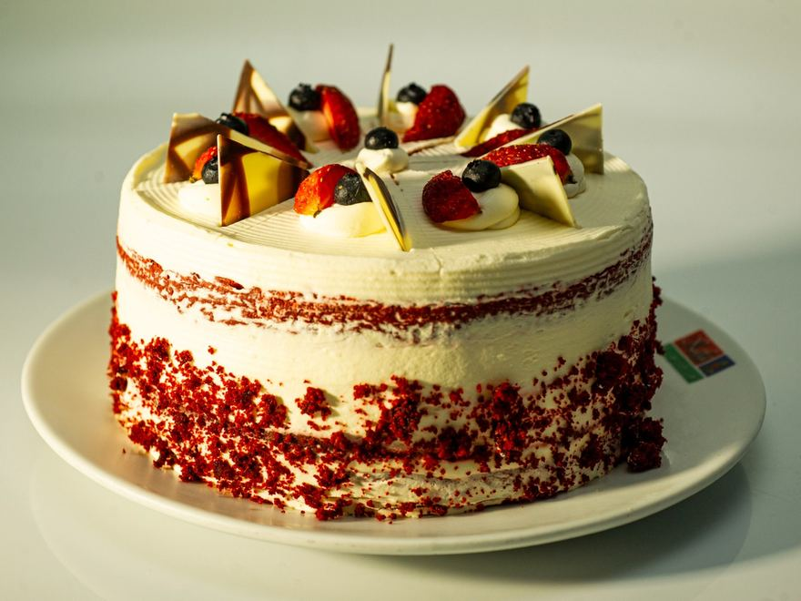
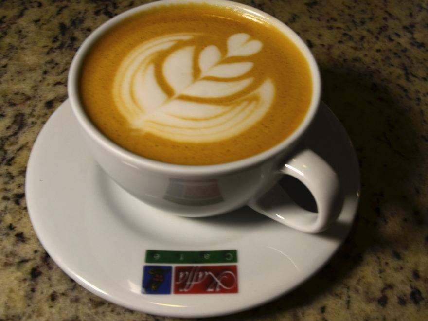
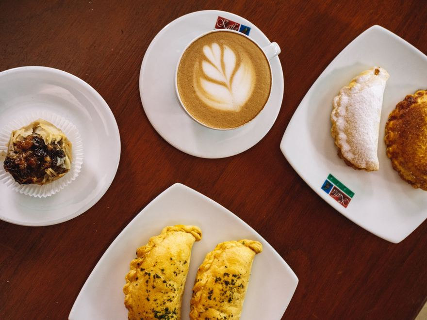
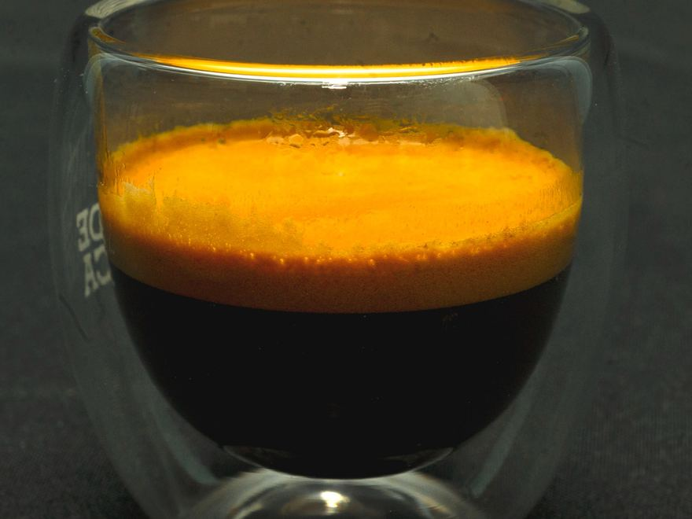
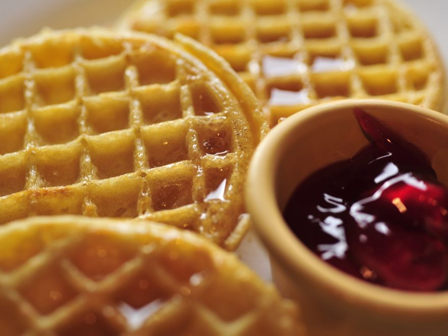
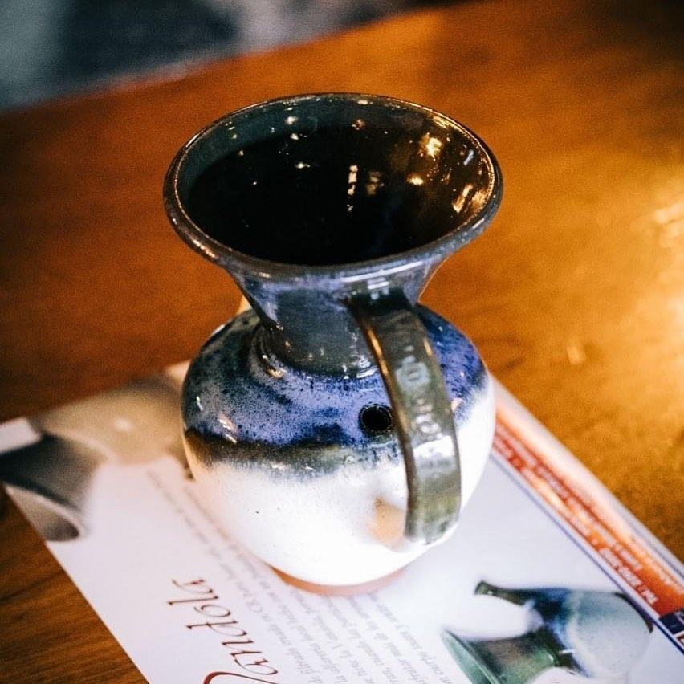
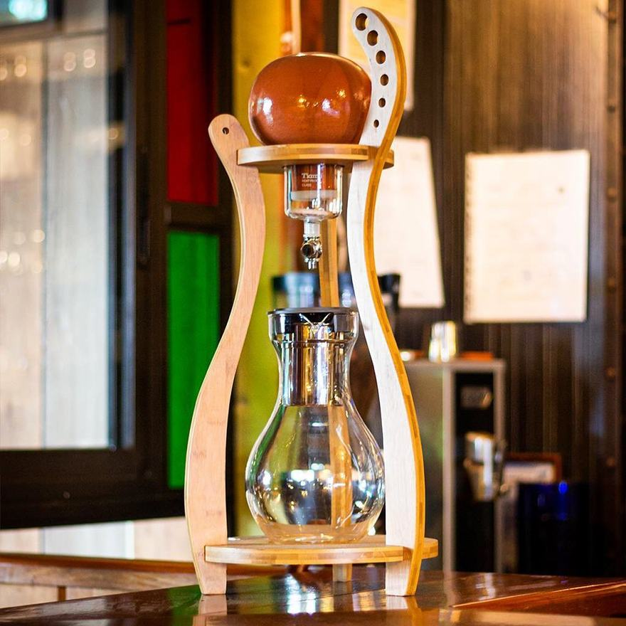
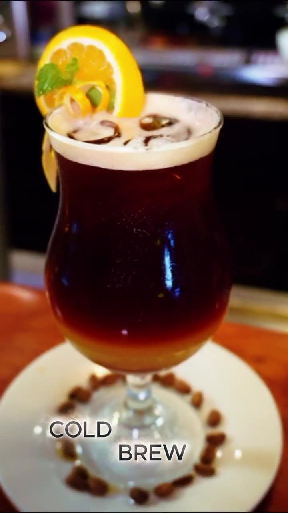

Desayunos
Típico, inter, continental, americano o saludable. De 8:00 a 11:45 a. m., con café y jugo de naranja incluidos.
San Isidro de Coronado · Costa Rica
Una casa antigua en el centro de Coronado, de la familia Alfaro Herrera. Desayuno típico, almuerzo y repostería preparados desde cero, con recetas de familia, acompañados de café de especialidad. Desde 2003.
La casa
Kaffa nació en 2003, en el seno de la familia Alfaro Herrera, a 250 metros del Banco de Costa Rica. Don Minor, especialista en café y estudiante permanente del barismo; doña Carmen, de una familia donde la cocina corre por las venas.
Todos los platos se preparan desde cero, con recetas de familia. El café que los acompaña es de especialidad, cuidado en todo el trayecto: del cafetal a la mesa.
La cocina
Dos cosas hechas por nosotros: lo que sale de la cocina y lo que sale de la barra. Desayuno desde las ocho, almuerzo al mediodía y café de especialidad a cualquier hora del día.
Típico, inter, continental, americano o saludable. De 8:00 a 11:45 a. m., con café y jugo de naranja incluidos.

Lomito, churrasco, salmón, pastas y el casado del día. Todo se prepara desde cero, con recetas de familia.

Torta chilena, tres leches, pies, queques y crepas dulces. También hay opción keto y gluten friendly.

El pan se hace aquí: trenza de hierbas, eiffel y vegano de tomate y albahaca. Las crepas son un clásico de Kaffa en el cantón.

El de la casa es Valle Central SHB-EP, entre 1200 y 1500 msnm: caturra, catuaí y obatá, con 83 puntos de catación. Además hay Geisha y café de proceso anaeróbico.

El grano se cuida en toda la trayectoria, del cafetal a la mesa. La bolsa de una libra se lleva a ¢6 500.

Espresso para las bebidas de la barra, y otros cafés de especialidad para el V60, la vandola y el cold brew. Se muele justo antes de preparar.

Café en grano o molido y repostería de la vitrina, para llevar a la casa o a la oficina.

La casa se presta para reuniones, celebraciones y grupos. Con reserva previa.

La pieza de barro que Minor Alfaro creó en esta casa. Tiene su propio sitio: vandolaoficial.com.
La carta
Recetas de familia y producto de primera. Algunos platos llevan más de cincuenta años en esta casa; otros los inventaron don Minor y doña Carmen detrás de la barra. Abrí la categoría que le interese.
¿Qué sería de nuestra vida sin el desayuno? En Kaffa nos esmeramos para que comencés tu día con el mejor sabor y tengás toda la energía para cumplir tus metas.

Recién hechas con nuestras recetas de familia. Podés pedirlas en bowl de pan, +¢1.000.
Hechos con nuestro pan estilo trenza de hierbas y nuestro pan eiffel.
Nuestras crepas han sido muy famosas en el cantón. Van bañadas en nuestra tradicional salsa bechamel y queso mozzarella; si las querés con salsa pomodoro, también te las podemos hacer. Todas vienen acompañadas de vegetales salteados.
Acompañados de ensalada de la casa.

Toda nuestra repostería está preparada con el mayor cuidado y frescura.
De acuerdo a disponibilidad.
Acompañá tu hora del café con estas tentaciones.
Elegí tu bebida con leche entera, descremada, deslactosada o de almendra, +¢500. Todas contienen leche, helado y azúcar.

Todas nuestras bebidas naturales son 100 % de fruta fresca, comprada directamente al agricultor, sin intermediarios.
A base de fruta natural, con helado y leche. ¡Son un postre de copa!
Además del café de la casa hay Geisha y café de proceso anaeróbico, y se prepara en V60, vandola, cold brew y otros métodos. Preguntá por lo que haya ese día.
Precios en colones, sujetos a cambio. Confírmelos por WhatsApp y le decimos también cuál es el postre del día. También puede ver el menú impreso, tal cual se lo dan en la mesa.


Galería
Arrastre el control para ver el antes y el después. Abajo, el salón, la barra y los platos que salen de esta cocina.











Fotos del local, de la barra y de los platos de la carta.
En video
Dos recorridos por el local y dos videos sobre la vandola, la cafetera de barro costarricense con la que se cuela acá: los grabaron terceros y están alojados en YouTube. Cierra el cold brew de la casa, grabado en la barra. Todos se abren aquí mismo.
 Ver en YouTube
Ver en YouTube
 Ver en YouTube
Ver en YouTube
 Ver en YouTube
Ver en YouTube

Ver el videoLos tres primeros están alojados en YouTube y el crédito es de cada canal. El recorrido y el cold brew son de Kaffa.
Reseñas en TripAdvisor
Kaffa es de esos lugares que da gusto visitar. Con una oferta gastronómica variada, excelente atención, muy buena comida y por supuesto excelente café. Parqueo cómodo. Precio adecuado al servicio y ambiente.
Este lugar es realmente acogedor, tranquilo, céntrico y espacioso. El personal muy profesional y atento y la comida vs calidad, de primera. Con un horario excelente y muchas opciones, hacen que tengamos que regresar para seguir degustando la exquisitez de su comida, sin olvidar el café que es #1…
Excelente para tomar diferentes tipos de cafés de especialidad. El servicio es bueno y de nota que tienen conocimiento amplio en cuanto a los tipos de café y su preparación. La comida es muy buena también.
Excelente cafetería. Mejoró mucho el sistema de parqueo. La comida y las especialidades de café siguen tan buenas como siempre. Excelente servicio.
Este lugar tiene una oferta amplia en café, delicioso, buena atención y ambiente agradable, el café frío es delicioso.
Reseñas publicadas por sus autores en TripAdvisor, entre 2017 y 2019.
Reservas
Para mesa no siempre hace falta reservar, pero para grupos y eventos sí. Llene el formulario y le confirmamos disponibilidad y precio.
Le respondemos por correo o WhatsApp con la disponibilidad y el monto. Al enviar le damos un número de reserva.